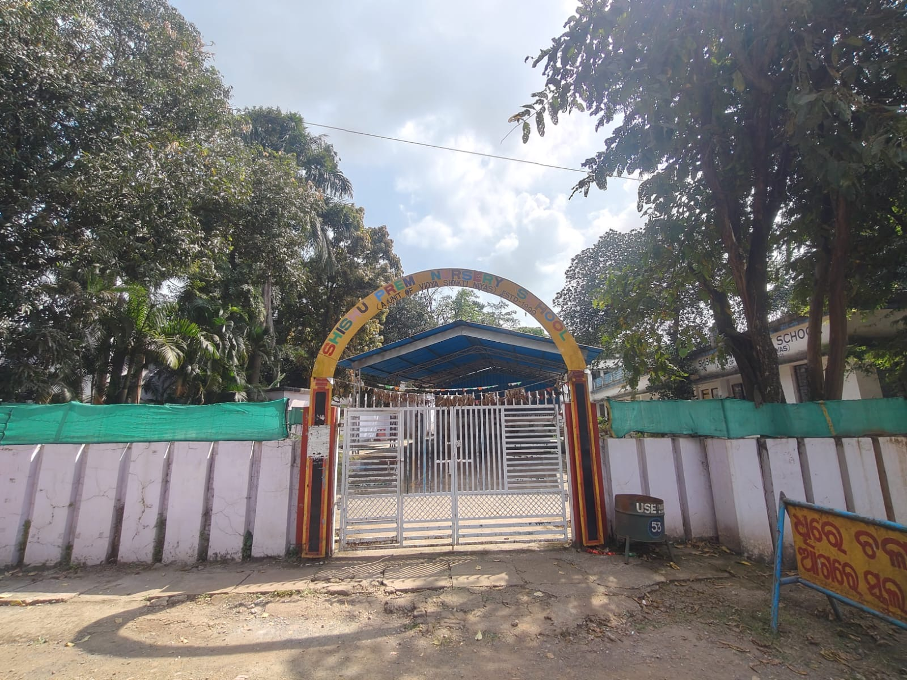
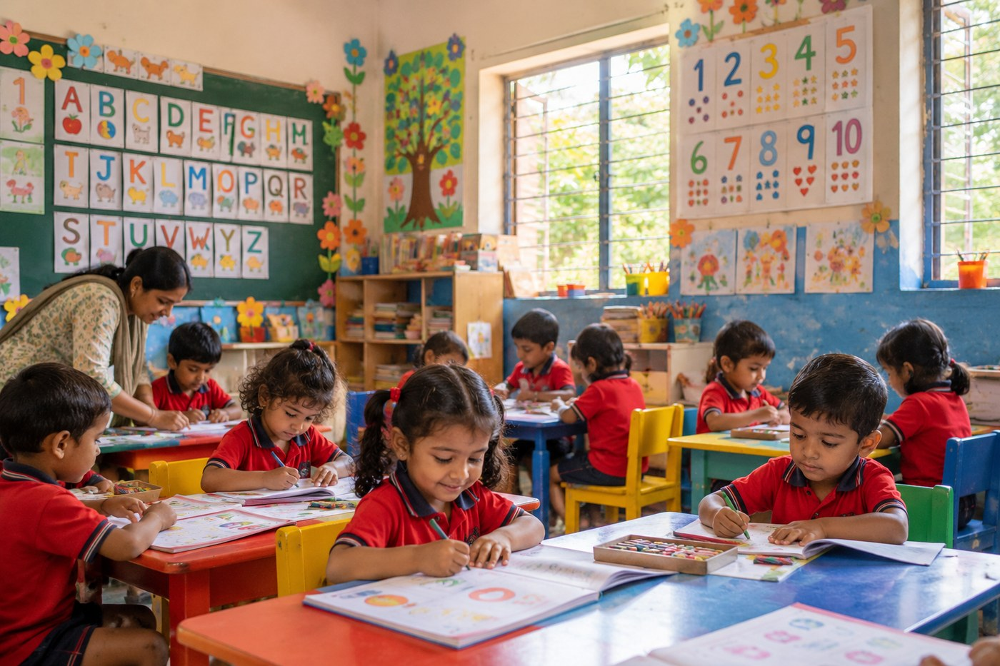
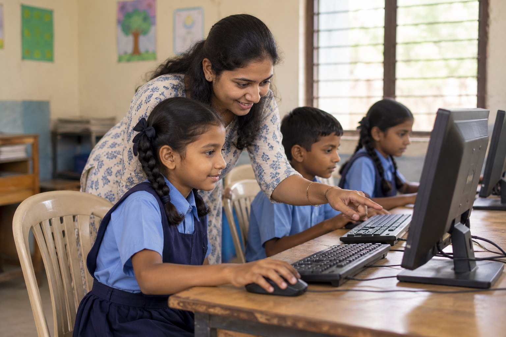
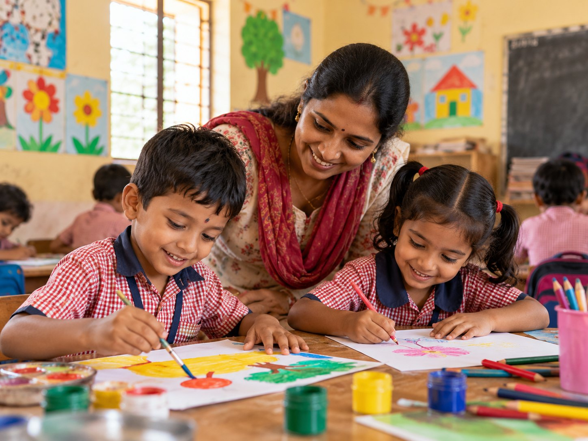
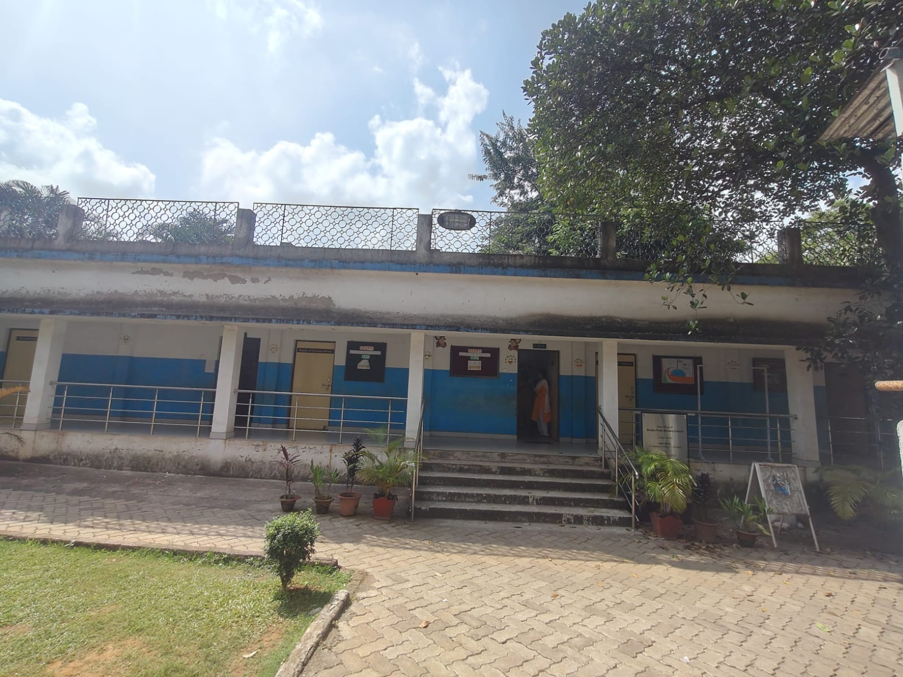
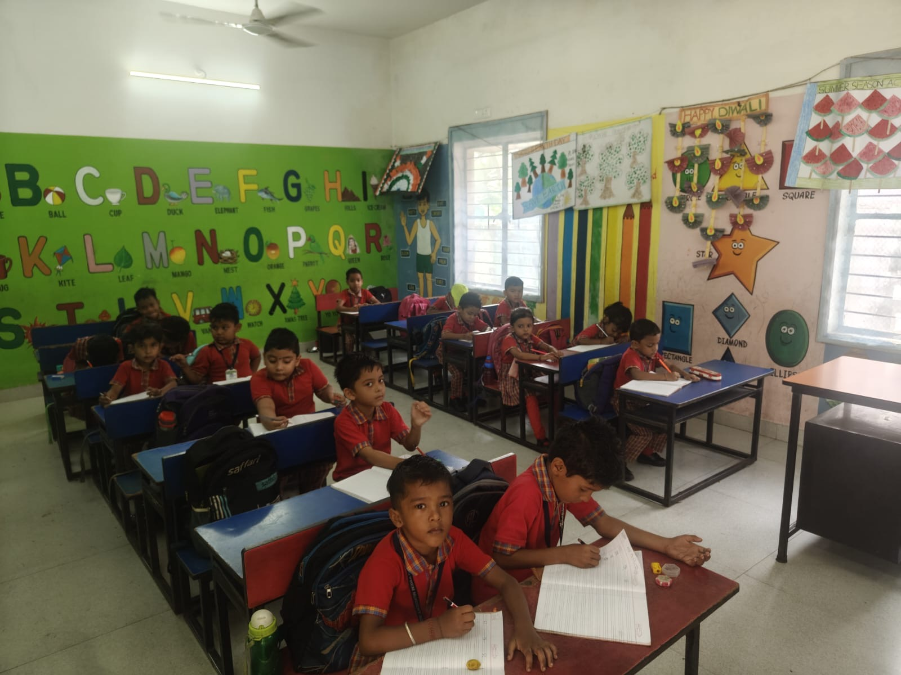
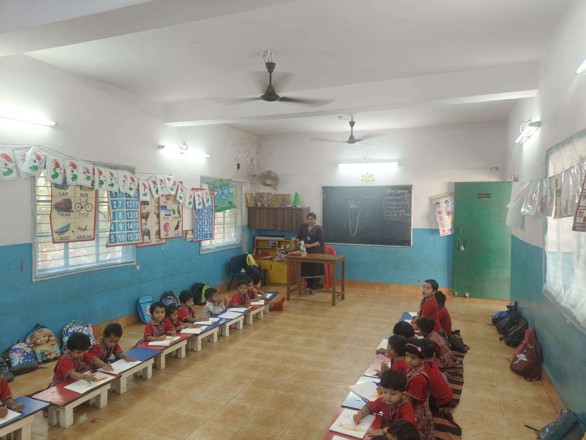
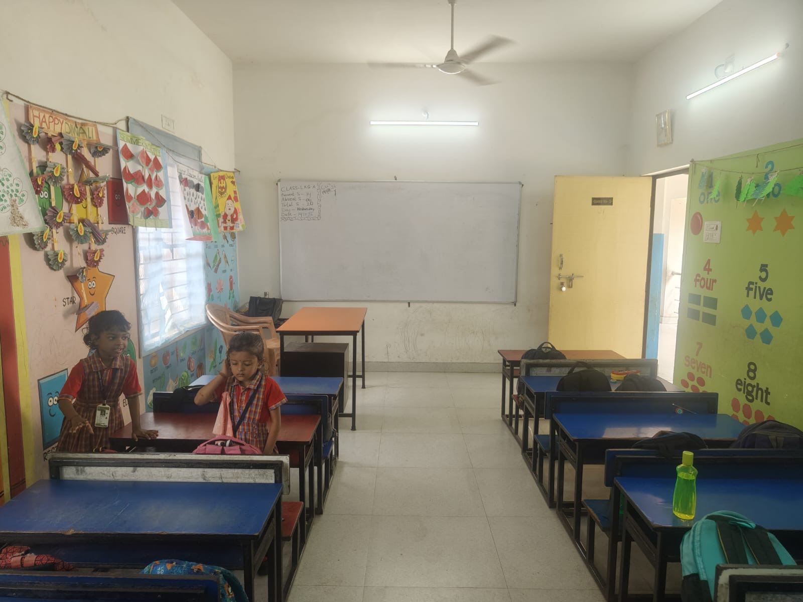

01 / Early years
Early childhood education
Free education for children in playschool, nursery, Lower Kindergarten (LKG) and Upper Kindergarten (UKG), with a focus on foundational learning.
Ask about the programmeLearning opportunities for the community
Vidya Shakti Niwas supports learning in Bilaipada through early childhood education, computer literacy, and creative activities.

Shishu Prem Nursery School · Bilaipada

Early learningPlayschool to UKG
Digital literacyComputer basics
Creative learningMusic and danceAbout the organisation
Every child deserves the chance to learn, discover their strengths, and shape a brighter future.
School gallery
Explore the school campus and classroom learning through a selection of photographs.




What we do
Explore the learning opportunities offered by Vidya Shakti Niwas.
01 / Early years
Free education for children in playschool, nursery, Lower Kindergarten (LKG) and Upper Kindergarten (UKG), with a focus on foundational learning.
Ask about the programme02 / Digital skills
Computer training introduces learners to basic computer skills. The organisation can add current class timings and course details after confirmation.
Ask about training03 / Creative development
Music and dance activities provide creative opportunities alongside academic and digital learning.
Learn moreOur reach
Enrolment across playschool, nursery, LKG and UKG.
Learners participating in basic computer training.
Computer classes are held weekly.
Success stories
Playschool, nursery, LKG and UKG provide a setting for children to begin developing foundational language and classroom-learning skills.
The centre reports weekly computer classes focused on basic computer skills. These sessions offer a starting point for learners to become familiar with digital tools.
Teachers help organise learning activities and guide children through classroom lessons. Their perspective can help explain what supports children and what resources are still needed.
Get involved
Interested in volunteering, supporting learning materials, helping with digital education, or exploring an institutional partnership? Contact the organisation to discuss current needs.
Contact
For programme enquiries, volunteering or potential partnerships, contact Vidya Shakti Niwas using its verified official contact details.
Bilaipada, India
Have a question or want to get involved? Reach out to the organisation using the contact options below.